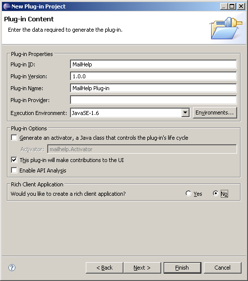
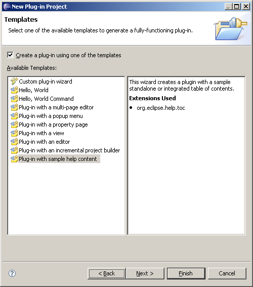
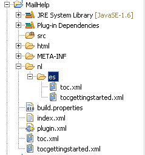
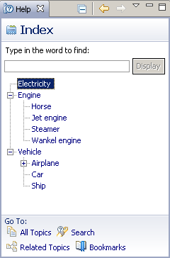

The help content for the product should be created on its own plug-in project. Fortunately, the PDE wizard already provides a startup template to build a basic table of contents:
1. Click File > New > Project, and select Plug-in Project, and click next.
2. Enter a project name (MailHelp for example), and click next.
3. Uncheck Generate an activator (as the plug-in will not contribute any code), then make sure This plug-in will make contributions to the UI is checked, and Rich Client Application is set to No (see figure 6.3). Then click next.
4. From the template page select Plug-in with sample help content (see figure 6.4), then click next.
6. Finally, enter a label for the table of contents, check primary (which will generate a primary or main table), and leave Generate ‘Getting Started’ category checked (see figure 6.4). Click finish.

Figure 6.3: Help plug-in using the PDE wizard.

Figure 6.4: PDE wizard template for a sample help plug-in.
Figure 6.5 shows the typical layout of a help plug-in. At the top, we see the plug-in manifest (plugin.xml), and one or more table of contents XML files as well as an index file (index.xml). The actual help contents (in HTML format) are created in the html folder.

Figure 6.5: Typical help content layout.
Tip As a convenience, to reduce file size, the documentation files can be packed in a ZIP file called doc.zip in the root folder of the plug-in. This is useful if the plug-in is not packed when deployed
The plug-in manifest defines the help system extension points. There are two main help extension points:
* Table of Contents (org.eclipse.help.toc): In general, a plug-in that needs to provide online help will define one or more TOC files. The file attribute defines the name of the TOC file which contains the table of contents or section for the plug-in online help. The primary attribute specifies whether the TOC file is a primary table of contents and meant to be the master. A non primary TOC is meant to be integrated into another table of contents. Other attributes are: extradir, and category. Extradir defines a relative path to a directory containing additional documents. All documents in this directory, and all subdirectories, will be indexed and accessible through the documentation search. Category defines a unique string used to group related books together.
* Index File (org.eclipse.help.index): This extension point defines the name of the index file which contains a list of keywords and related topics of the help content.
The fragment below shows a plug-in manifest with two TOC files, a primary (master) and a secondary, as well as an index file.
<?xml version="1.0" encoding="UTF-8"?>
<?eclipse version="3.2"?>
<plugin>
<extension
point="org.eclipse.help.toc">
<toc
file="toc.xml"
primary="true">
</toc>
<toc
file="tocgettingstarted.xml">
</toc>
</extension>
<extension
point="org.eclipse.help.index">
<index
file="index.xml">
</index>
</extension>
</plugin>
A TOC file consists of a root <toc> element with a required label attribute. The topic attribute provides a link to a documentation file - usually an HTML file. The table of contents will be shown as a hierarchical navigation tree within the help user interface.
Topic Element
Topic is the basic element of a Table of Contents. Topics can be nested within other topics. The most important attributes of a topic are:
* Label: A required label for the topic element.
* Href: A link to a documentation file usually in HTML format.
Topics with Anchors
Topics can act as containers for other topics or specify an anchor ID which provides a point where other TOCs can embed their contents. The fragment below defines two TOC files. The first TOC uses an anchor to define a point that will allow linking other TOC files to this navigation.
<?xml version="1.0" encoding="UTF-8"?>
<?NLS TYPE="org.eclipse.help.toc"?>
<toc label="Mail Help" topic="html/toc.html">
<topic label="Getting Started">
<anchor id="gettingstarted"/>
</topic>
</toc>
<?xml version="1.0" encoding="UTF-8"?>
<?NLS TYPE="org.eclipse.help.toc"?>
<toc label="Getting Started" link_to="toc.xml#gettingstarted">
<topic label="Welcome to RCP Mail" href="html/gettingstarted/maintopic.html">
<topic label="Mail" href="html/gettingstarted/subtopic.html" />
</topic>
<topic label="Mail User Interface">
<topic label="Main Window" href="html/gettingstarted/subtopic2.html" />
</topic>
</toc>
Topics with Links
The link element allows embedding other TOC files into the parent, similar to the anchor element. For example, to include the TOC ch01toc.xml within it’s parent:
<topic label="Chapter 1" >
...
<link toc="ch01toc.xml" />
...
</topic>
The index file is a keyword index for contributed help content in XML format. It contains a list of keywords and related topics of the content. The fragment below shows a typical index file:
<index>
<entry keyword="Vehicle">
<topic href="inventory_of_wheel.html"/>
<entry keyword="Car">
<topic href="car.html"/>
</entry>
<entry keyword="Ship">
<topic href="ship.html"/>
</entry>
<entry keyword="Airplane">
<topic href="airplane.html" title="History of aviation"/>
<topic href="jet.html" title="Jet engine"/>
</entry>
</entry>
<entry keyword="Engine">
<entry keyword="Horse">
<topic href="horse.html"/>
</entry>
<entry keyword="Steamer">
<topic href="steamer.html"/>
</entry>
<entry keyword="Wankel engine">
<topic href="wankel.html"/>
</entry>
<entry keyword="Jet engine">
<topic href="jet.html"/>
</entry>
</entry>
<entry keyword="Electricity">
<topic href="electricity.html"/>
</entry>
</index>
The index consists of a series of entries. Each entry may contain several links to help topics associated with the keyword. An entry can also be a container for other entries (subentries) to form hierarchy of keywords and have topics simultaneously.
The topic element provides reference to help content related to the keyword using the href attribute. To access a file in another plug-in, use the syntax: <topic label="External Topic" href="../plugin.id/html/other_file.html"/>.
The title attribute of a topic is used to name the link when multiple topics are contained within an entry. Figure 6.6 shows the index contents displaying within the help view; when a keyword is clicked, the topic contents (from href) will displayed in the view. The view also implements a powerful search interface.

Figure 6.6: Help view showing index contents.
The help system supports internationalization for TOC and index files. To do this, the XML files must be translated and the resulting copies must be placed under a directory named nl/<language>/<country> or nl/<language> within the plug-in root directory. The <language> and <country> are two letter language and country locale codes. For example, Spanish translations must be placed under nl/es. Figure 6.5 shows the folder layout. Translated versions of the content documents should be placed here as well.
Tip The locale search priority order goes as follows (from highest): nl/<language>/<country>, nl/<language>, and the root directory of the plug-in.